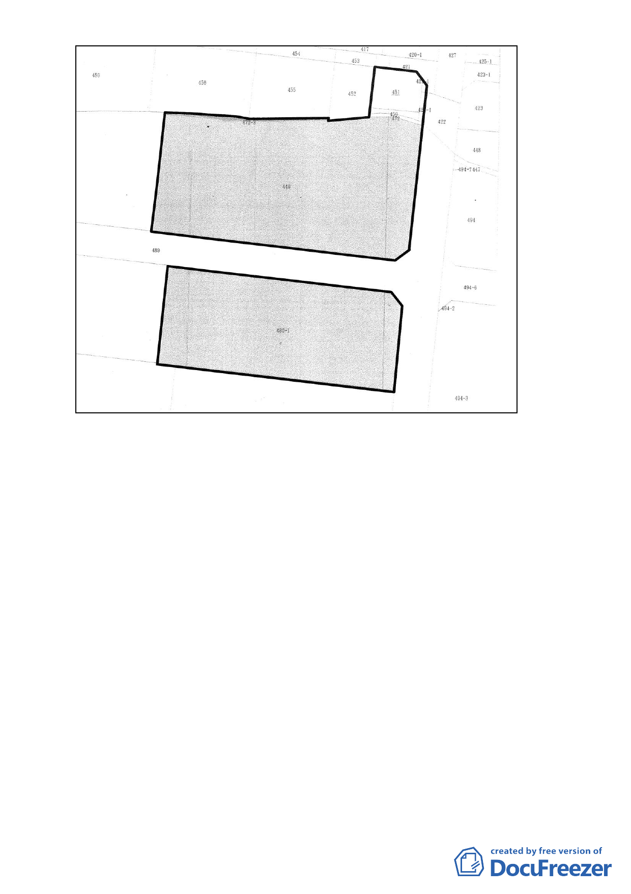

國有土地(管理單位：國有財產局)
472-3
國有土地(管理機關：台灣大學)
449
486-1
國有土地(管理機關：台灣大學)
圖 2 更新單元土地權屬
五、本案辦理經過：
（一）案經 98 年 6 月 30 日本會第 595 次大會決議：
1. 請更新處函詢國有財產局於 98 年 1 月 10 日後對本案國有土
地之處理意向；另本更新單元南側土地所有權人陳情納入
更新單元，請更新處主動處理鄰地協調事宜。」
2. 本案公有土地地上物為日式宿舍，請市府邀集都委會委員、
土地管理單位、使用單位及文化局辦理現場會勘後再討論
更新單元範圍之劃定。
（二）98 年 7 月 23 日市府都市更新處辦裡現勘，結論：
1.本案基地內僅 1 棵受文化局列管之老樹，考量本案基地內其
它樹木之保存，建議申請單位調查本案基地內樹木之樹籍
資料，並將其詳細資料列冊提送至更新處，提供都市計畫
委員會審議參考。
2.經文化局表示，本案基地上之日式建築業經 95 年 12 月 13
- 15 -